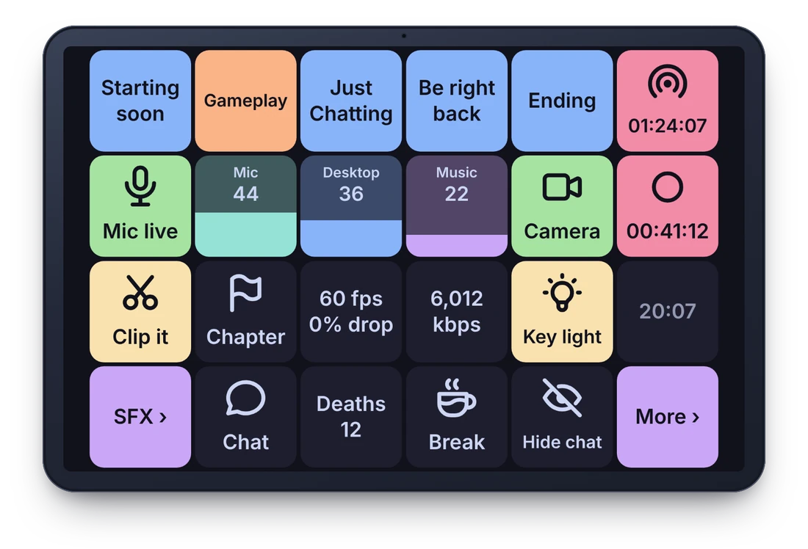
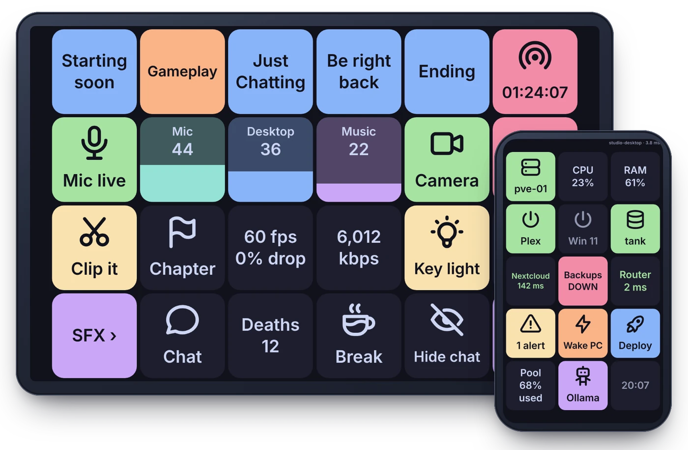
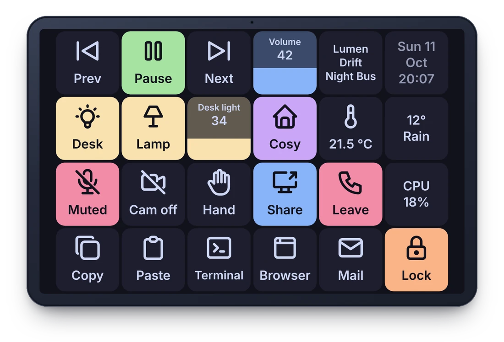

Streaming
Switch OBS scenes, mute the mic, save a replay, run a Twitch ad or poll. Keys show what's live, how long you've been on, and whether frames are dropping.
Pre-release · free and open source
PerritoDeck turns an Android tablet or phone into a Stream Deck–style grid of buttons for your Windows, Mac or Linux computer. Switch scenes, mute your mic, keep an eye on your servers, run anything. No account, no cloud, no subscription.


Switch OBS scenes, mute the mic, save a replay, run a Twitch ad or poll. Keys show what's live, how long you've been on, and whether frames are dropping.

Start and stop Proxmox guests, watch TrueNAS pools and alerts, see which services answer, wake a PC on the network. Everything at a glance, one tap away.

Media keys and volume, the lights in your room, mute and camera hotkeys for your meeting app, and the shortcuts you use all day, typed for you.
Start PerritoDeck on your computer and Perrito on the tablet. Scan the QR code or type the six-digit code. Wi-Fi or a USB cable, your choice.
Drag actions onto keys in the desktop app: hotkeys, text, apps, websites, OBS, Home Assistant, plugins. The tablet updates as you edit.
Your computer does the work and the tablet shows the result: a ✓, a new page, a live value. Profiles can switch by themselves with the app in front.

A toy version of the deck, right here in your browser. The real one lives on your tablet and runs real actions on your computer.
Go on, press a key.
That tablet in the drawer has a bigger, sharper screen than most macro pads. Perrito runs on Android 5.1 and newer, Amazon Fire tablets included.
The tablet talks only to your computer, over your own Wi-Fi or a USB cable, encrypted and paired. No sign-up, no tracking, no telemetry.
OBS Studio and Home Assistant (experimental) are built in, 24 plugins add Twitch, Proxmox, Philips Hue, timers and more, and many plugins made for the Stream Deck run too. See what's compatible.
Apache-licensed apps, MIT-licensed plugin SDKs for Python and Node.js, and a documented protocol, so anyone can build a plugin or a client of their own.
PerritoDeck works end to end, but there's no published release yet. Here's the honest picture: